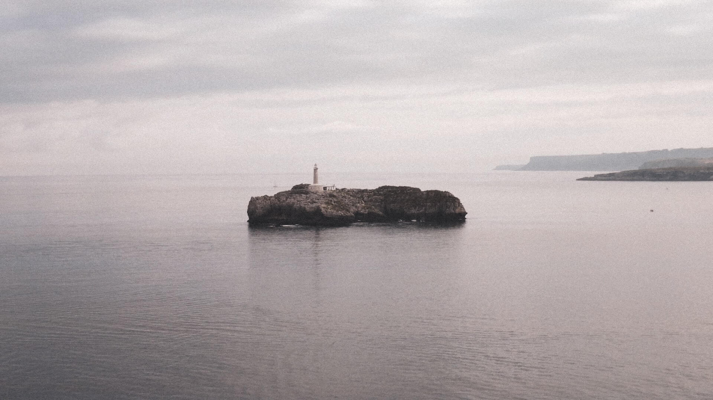
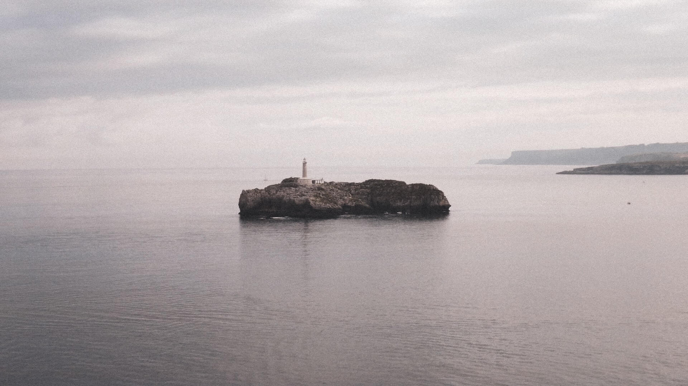
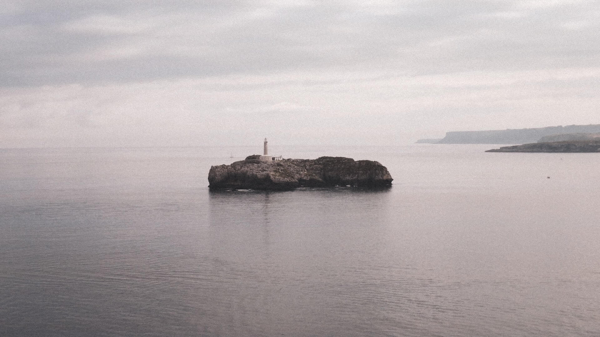

This project was born from a roadtrip through the northern part of Spain, a perfect excuse to warm up my photography & coloring skills.
Although taken digitally, the final treatment sets up to give the pictures a more film-like 35mm look throught the use of some Lightroom techniques.
This was my first project of the sort, working as a main photographer, after being used to work along other photographers mostly as a producer.
